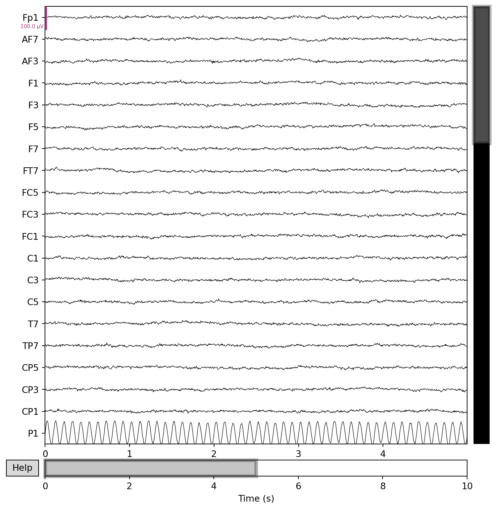

Installing MNE-Python, understanding the core data structures, loading EEG files, creating simulated data, and visually inspecting the signal.
Published
31 March 2026
Modified
31 March 2026
Overview
This module covers everything you need before you start analysing real EEG data. You will install MNE-Python, learn the main data structures that MNE uses to represent brain signals, practise loading files in several common formats, and create simulated EEG data so you can experiment without needing access to patient recordings. By the end of this module you should be able to open a raw EEG file, inspect it visually, and understand what you are looking at.
Topics
Installing MNE-Python
MNE-Python can be installed with pip or conda. The conda-forge channel tends to handle compiled dependencies (like HDF5 for reading certain file formats) more smoothly, but pip works well for most setups. See the installation guide for step-by-step instructions covering both methods.
If you plan to use features like 3D source-space visualisation, you will also need PyVista and pyvistaqt. For the work in this site, the base mne package is enough.
MNE data structures
MNE organises EEG data into a small set of objects. Understanding these is the single most important step before doing any analysis, because every function in MNE expects one of them as input.
Object
What it holds
Typical use
Raw
Continuous recording (all channels, full duration)
Real EEG recordings come in many formats depending on the amplifier and software used during acquisition. MNE has dedicated readers for the most common ones:
EDF / EDF+ (European Data Format): mne.io.read_raw_edf(). Very common in clinical and research settings.
BDF (BioSemi Data Format): mne.io.read_raw_bdf(). Used with BioSemi ActiveTwo amplifiers.
BrainVision (.vhdr + .vmrk + .eeg): mne.io.read_raw_brainvision(). Used with BrainProducts amplifiers.
EEGLAB .set files: mne.io.read_raw_eeglab(). Useful if collaborators preprocessed data in EEGLAB/MATLAB.
All of these return a Raw object. The loading functions share a common interface, so once you know how to work with one format, switching to another is just a matter of changing the function name and file path. See Loading EEG data for examples of each format.
# Example: loading a BrainVision fileraw = mne.io.read_raw_brainvision("subject01.vhdr", preload=True)print(raw.info)
Creating simulated EEG data
When you are learning, it helps to work with data you fully control. MNE’s mne.simulation module lets you create realistic multi-channel EEG signals with known properties. This means you can add a known artifact, remove it with ICA, and check whether the procedure worked, something you cannot do with real data where the “ground truth” is unknown.
See Simulating EEG data for the full details. Below is a working example that creates a 64-channel recording and plots it.
Setting channel locations (montages)
EEG channels have physical positions on the scalp. MNE needs to know these positions to draw topographic maps, to interpolate bad channels from their neighbours, and to compute average references correctly. A montage is a mapping from channel names to 3D coordinates.
MNE ships with standard montages like standard_1020 (the international 10-20 system) and biosemi64. You apply a montage to your data with raw.set_montage(). See Setting channel locations for worked examples.
Before any automated processing, you should always look at your data. MNE’s raw.plot() opens an interactive browser where you can scroll through the recording, mark bad channels, and annotate noisy segments. This step catches problems that no algorithm will flag: a loose electrode, a participant moving during the recording, or a channel that drifted steadily throughout the session.
The Brain Imaging Data Structure (BIDS) is a standard way to organise neuroimaging datasets, including EEG. BIDS specifies a folder hierarchy, file naming convention, and metadata files (JSON sidecars, *_channels.tsv, *_events.tsv) that make datasets self-documenting and shareable.
The mne-bids package reads and writes BIDS-formatted EEG datasets. If you are working with a public dataset, there is a good chance it follows BIDS. See The BIDS format for EEG for an introduction and examples of reading BIDS datasets with mne_bids.read_raw_bids().
Working example: simulated 64-channel EEG
The code below creates a 64-channel EEG recording lasting 10 seconds, adds some simulated brain activity, and plots it. You can run this without any external data files.
import numpy as npimport mne# Reproducibilityrng = np.random.default_rng(42)# Create a 64-channel montage and Info objectmontage = mne.channels.make_standard_montage("biosemi64")ch_names = montage.ch_names[:64]sfreq =256# Hzinfo = mne.create_info(ch_names=ch_names, sfreq=sfreq, ch_types="eeg")# Generate 10 seconds of simulated data# Mix of alpha (10 Hz) and pink noise to look roughly like resting-state EEGn_samples =int(10* sfreq)times = np.arange(n_samples) / sfreq# Pink noise (1/f): generate white noise and shape the spectrumwhite = rng.standard_normal((len(ch_names), n_samples))freqs = np.fft.rfftfreq(n_samples, d=1/ sfreq)freqs[0] =1# avoid division by zeropink_filter =1/ np.sqrt(freqs)pink = np.fft.irfft(np.fft.rfft(white) * pink_filter, n=n_samples)# Add a 10 Hz alpha oscillation (stronger in posterior channels)alpha = np.sin(2* np.pi *10* times)posterior = [i for i, ch inenumerate(ch_names) if ch.startswith(("O", "P"))]for idx in posterior: pink[idx] +=3* alpha# Scale to realistic microvolts (roughly 20-50 uV peak-to-peak)pink *=20e-6/ pink.std()# Build the Raw objectraw = mne.io.RawArray(pink, info)raw.set_montage(montage)# Plot a 5-second windowfig = raw.plot( duration=5, n_channels=20, scalings={"eeg": 50e-6}, title="Simulated 64-channel EEG", show=True)
Creating RawArray with float64 data, n_channels=64, n_times=2560
Range : 0 ... 2559 = 0.000 ... 9.996 secs
Ready.
Using matplotlib as 2D backend.

Simulated 64-channel EEG data using the BioSemi montage.
The plot shows 20 channels over 5 seconds. Posterior channels (O1, O2, Oz, Pz, etc.) show a clear 10 Hz alpha rhythm, while frontal channels have mostly broadband noise. This is a rough approximation of what resting-state EEG looks like when a person sits with their eyes closed.
What comes next
Once you are comfortable loading and inspecting raw data, move on to Module 2: Preprocessing, where you will learn how to filter the signal, remove line noise, and re-reference the channels.